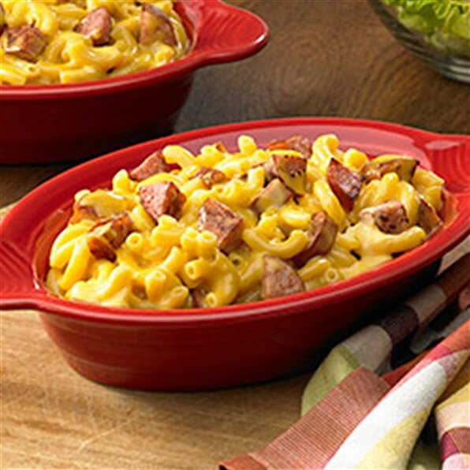

Mac and Cheese

Description
While many reach for the boxed stuff, this quick and easy recipe shows you how easy homemade can be. Take your favorite elbow macaroni, butter, flour, milk and American cheese to create a delicious meal that everyone loves. For the real treat, add in some smoked sausage for that extra hit of savory goodness.
Ingredients
- 2 cups uncooked whole grain elbow macaroni
- 3 tablespoons butter
- 3 tablespoons flour
- 1 cup fat-free milk
- 8 ounces processed American cheese, cubed
- 1 link smoked sausage, quartered and sliced
Steps
- Cook macaorni according to package directions; drain.
- Meanwhile, in another saucepan, melt butter over medium heat.
- Stir in flour until smooth; gradually whisk in milk.
- Bring to a boil, stirring constantly. Cook and stir for 2 minutes or until thickened.
- Add cheese; cook and stir until melted.
- Stir in macaroni and sausage. Enjoy!